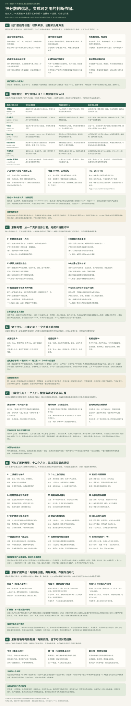

你提需求的地方
可以就是与模型的聊天。来源清单提供查询起点；提示词说明任务、证据标准和输出要求。
逐个说清楚：信息从哪里来，供我们观察什么，拿到后怎么处理。这里既有作者和用户发布内容的地方，也有帮我们聚合热门线索的入口。
来源：少数派、小众软件、V2EX、Buzzing、NewsNow、今日热榜、SoPilot；按需补充产品官网与更新日志、项目 Issues、HN / Show HN。
处理：围绕真实任务读原文、追溯出处、记录版本与条件；合并同源转载，保留独立实测和反例，比较互补、冲突与缺口，再保存证据和有边界的判断。
扩展与价值：用于工具选型、工作流优化、更新跟踪、简报问答、趋势与选题、需求和竞品研究；继续探索团队采用、垂直资料站、研究订阅及自动助手。目标是减少重复调研与遗漏，让下一次判断有可追溯、可更新、可复用的积累。自动化与业务方向尚待实跑验证。
| 来源与类型 | 信息从哪里来 | 供我们观察什么 | 后续怎么处理 |
|---|---|---|---|
| 少数派 ↗编辑与作者内容 | 编辑和社区作者发表的工具体验、教程与工作流文章。 | 别人怎样用 AI 和软件完成工作，哪些用法经过具体测试。 | 读测试过程，提取步骤、版本、样本和限制，再用自己的任务复验。 |
| 小众软件 ↗编辑介绍与用户发现 | 编辑发布的软件介绍和更新消息，以及论坛用户分享的新发现。 | 有哪些没注意到的 AI 小工具、桌面软件和替代品。 | 先列入候选，再查官网功能、费用和独立实测；介绍本身不当效果证明。 |
| V2EX ↗社区原生讨论 | 社区用户发布的帖子和回复，也包含开发者自荐。 | 大家遇到什么问题，实际使用有哪些限制、成本和替代办法。 | 读上下文，区分自荐与用户反馈；核对版本环境，再找独立反馈或 Issues 复核。 |
| Buzzing ↗海外聚合与中文导读 | HN、Reddit、Product Hunt 等海外站点的热门标题及原文链接。 | 国外正在讨论哪些 AI 动态、新工具、新项目和使用方法。 | 点回原站读正文与评论；Buzzing 和原站算同一条线索，避免重复计证据。 |
| NewsNow ↗跨平台聚合观察 | 聚合多个站点的热门或最新条目；原帖举例有知乎、微博、HN、GitHub。 | 哪些话题正在受关注，有没有值得继续调查的 AI 或工具线索。 | 回到原始帖子或项目读取内容，再查官网和实测；与原站及其他热榜同源去重。 |
| 今日热榜 ↗热榜聚合 · 当前覆盖待核实 | 按原帖介绍，汇集资讯、社区、视频等多个站点的热门榜单。 | 不同平台都在关注什么，话题热度和传播方向有什么差异。 | 沿话题回原站查全文与独立证据；与 NewsNow 重复的话题合并观察。 |
| SoPilot 起爆帖 ↗X 热帖观察入口 | 从 X 筛选正在快速升温、可能爆火的帖子，展示互动数据与预测。 | AI 圈正在关注什么工具或观点，哪些讨论正在升温。 | 打开 X 原帖读上下文，再补官网、实测和问题反馈；热度和预测不当真实性证明。 |
目标工具官网 / 更新日志核实当前功能与限制；项目 Issues / 支持论坛核对复现与修复；HN / Show HN ↗补海外项目。具体产品入口随任务添加。
要解决什么任务？先选对应来源，有缺口再扩展。
记日期、版本和使用条件；只看到标题就标待查。
同一发布稿的多篇转述只算一组；实测和反例留下。
官网说能做什么，实测说明效果，反馈补充限制。
记录出处、条件、矛盾与缺口；需要时用自己的任务试。
优先参考，按需扩展。热度与转载数量，都不能替代独立证据。
可以就是与模型的聊天。来源清单提供查询起点；提示词说明任务、证据标准和输出要求。
保留冷门发现、原创测试、长期体验和失败案例；反复转述公开信息的来源可降级。
同一批可追溯证据，可以用于工具选型、每周简报、趋势观察和工作流优化。
完整理解 / 可放大查看
一张完整长图串起我们总结的价值、七个原始来源与三类补证入口、处理闭环、证据沉淀和日常用法；继续展开十二类应用方向、系统扩展、两周起步及验证边界。

打开完整图，放大查看细节 ↗来源池 / 记录去哪里找
先用五类入口：官方资料、小众软件、少数派、V2EX、Show HN。具体项目的 Issues 按需加入。来源选择是我们的建议，文章质量仍需逐条判断。
“优先参考这些来源”提供起点；“只准查这些来源”会限制范围。候选不足时找新源，证据足够时停止。三份转载不能替代一次独立实测。
二次处理 / 一个完整示例
同一工具的不同证据放在同一主题下比较；只有同一出处的重复信息才合并。材料数量与证据独立性是两回事。
证据库 / 保存发现及依据
来源池是地址簿，证据库是带出处的事实与反馈记录。它不等于摘要合集；模型综合判断与底层证据分别保存，并相互引用。
读过官网，只能确认厂商作出了这个声明。用户反馈和独立实测，也要记录适用条件与样本限制。
发现新版本、矛盾或失效链接时，追加记录并关联旧条目。待查线索保持待查，不补写看不到的内容。
统一入口 / 说清目标与证据标准
这里帮你生成提示词。把它和已有证据一起交给可联网的模型执行；本页自身不发起检索或模型调用。
工具官网和项目 Issues 需要按实际候选补充具体地址。没有有效输入时，先明确需求。
最小起步 / 用两周验证价值
第一阶段可以用一份普通表格或 JSON 文件记录，加上联网模型按需执行。先看能否帮助自己做决定，再考虑定时与规模化。
选择资料整理、文档处理或重复办公中的一个问题。写清现有做法、预算和通过条件。
产物：一段任务说明 + 五类来源清单每周两次，每次最多新增五条。合并转载，保留独立测试、问题反馈和来源链接。
产物：能支撑候选比较的证据记录用同一份真实材料比较现有做法和一个候选，记录总耗时、错误与人工修改。
产物：一条本人测试 + 一次选择与取舍带来新候选、独立证据或反例的来源继续保留；只有重复介绍的降为备用。流程有用且重复发生后，再接自动化。
工具分工 / 当前验证范围
| 层次 | 负责什么 | 当前进展 |
|---|---|---|
| 来源池与规则 | 定义查询起点、证据要求、去重和补查逻辑 | 已整理 |
| 这个网页 | 展示理解、演示处理、筛选来源、生成提示词 | 本次实现 |
| 联网模型 | 读取材料、判断同源、比较观点并报告缺口 | 需要在实际任务中执行 |
| Inoreader / n8n / TrendRadar | 候选采集、定时执行、去重与分析编排工具 | 资料已查 · 尚未接入实跑 |
| 持续运行的证据库 | 保存历史、版本、关联、判断与本人测试 | 当前提供空白模板，尚无生产数据 |
提示词提供目标和处理要求，需要可读取网页的模型实际执行。重复定时、抓取失败重试、历史去重、长期保存和通知，需要采集与存储工具。是否识别同源转载、保留反例，仍要用真实样本验收，不能仅凭产品宣传确认。
付费墙、登录、访问失败或仅有标题时，标注证据不足。不同版本的结论可能不同；同一发布稿被多个网站转述，不能增加独立支持的数量。
整理日期：2026-10-23。方法建议来自本次讨论；外部工具能力以对应版本文档和实际测试为准。演示数据明确为虚构，模板中不含已验证的产品结论。